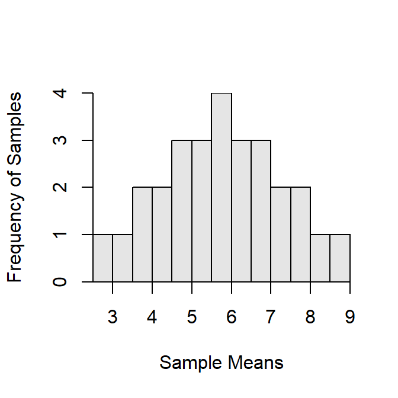

[,1] [,2] [,3] [,4] [,5] [,6] [,7] [,8] [,9] [,10]
[1,] 12 12 12 12 14 14 14 16 16 18
[2,] 14 16 18 20 16 18 20 18 20 20 [1] 13 14 15 16 15 16 17 17 18 19 [,1] [,2] [,3] [,4] [,5] [,6] [,7] [,8] [,9] [,10]
[1,] 12 12 12 12 12 12 14 14 14 16
[2,] 14 14 14 16 16 18 16 16 18 18
[3,] 16 18 20 18 20 20 18 20 20 20 [1] 14.000 14.667 15.333 15.333 16.000 16.667 16.000 16.667 17.333 18.000[1] 16[1] 1.217 [,1] [,2] [,3] [,4] [,5]
[1,] 12 12 12 12 14
[2,] 14 14 14 16 16
[3,] 16 16 18 18 18
[4,] 18 20 20 20 20[1] 15.0 15.5 16.0 16.5 17.0[1] 16[1] 0.791R Appendix.
d <- c(12,14,16,18,20)
mu <- mean(d)
sigma <- sd(d)
d2 <- combn(d,2)
d2mns <- combn(d,2,FUN=mean)
d2m <- mean(d2mns)
d2se <- sd(d2mns)
d3 <- combn(d,3)
d3mns <- combn(d,3,FUN=mean)
d3m <- mean(d3mns)
d3se <- sd(d3mns)
d4 <- combn(d,4)
d4mns <- combn(d,4,FUN=mean)
d4m <- mean(d4mns)
d4se <- sd(d4mns)NOT AVAILABLE
Table 1: All possible samples of n=2 from the numbers 2 through 9. Each column represents the two values in a possible sample.
[,1] [,2] [,3] [,4] [,5] [,6] [,7] [,8] [,9] [,10] [,11] [,12] [,13] [,14] [,15]
[1,] 2 2 2 2 2 2 2 3 3 3 3 3 3 4 4
[2,] 3 4 5 6 7 8 9 4 5 6 7 8 9 5 6
[,16] [,17] [,18] [,19] [,20] [,21] [,22] [,23] [,24] [,25] [,26] [,27] [,28]
[1,] 4 4 4 5 5 5 5 6 6 6 7 7 8
[2,] 7 8 9 6 7 8 9 7 8 9 8 9 9Table 2: All possible means from samples of n=2 from the numbers 2 through 9.
[1] 2.5 3.0 3.5 4.0 4.5 5.0 5.5 3.5 4.0 4.5 5.0 5.5 6.0 4.5 5.0 5.5 6.0 6.5 5.5 6.0 6.5
[22] 7.0 6.5 7.0 7.5 7.5 8.0 8.5
Figure 1: Histogram of all means from samples of n=2 from the numbers 2 through 9.
R Appendix.
library(NCStats)
( smpls2 <- combn(2:9,2) )
( mns2 <- as.numeric(combn(2:9,2,mean)) )
mean(mns2)
mean(2:9)
sd(mns2)
hist(~mns2,w=0.5,xlab="Sample Means",ylab="Frequency of Samples")